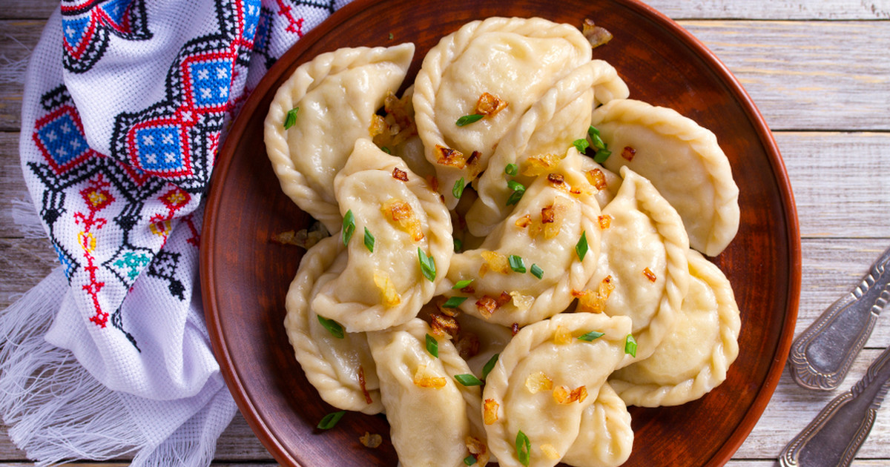

Pierogi

Description
Pierogi – ogólnie: kawałki cienkiego, elastycznego i dobrze zlepiającego się ciasta napełnione najrozmaitszymi farszami i ugotowane w wodzie lub na parze, upieczone, usmażone czy grillowane
Ingredients
- 500 g mąki pszennej.
- 3/4 szklanki wody.
- 50 g miękkiego masła.
- 1 jajko.
- 2 żółtka.
- 1 łyżeczka soli.
Steps
- Mąkę wsypać do miski, dodać sól. Do wrzącej wody włożyć masło i roztopić, stopniowo wlewać do mąki, mieszając wszystko łyżką.
- W międzyczasie dodać roztrzepane jajko i połączyć wszystkie składniki, zagnieść gładkie ciasto.
- Wyłożyć na podsypany mąką blat i wygniatać przez około 7 - 8 minut. Zawinąć w folię i odstawić na ok. 30 minut.
- Ciasto podzielić na 4 części i kolejno rozwałkowywać na cienki placek (około 2 - 3 mm), obsypując w razie potrzeby stolnicę mąką.
- Małą szklanką wycinać kółka, rozciągnąć je trochę w palcach, następnie na środek nakładać po jednej czubatej łyżeczce farszu.
- Składać na pół i zlepiać dokładnie brzegi, układać na stolnicy.
- W dużym garnku zagotować osoloną wodę i jak będzie mocno wrzała, włożyć pierwszą partię pierogów (około 15 sztuk).
- Po ponownym zagotowaniu zmniejszyć ogień do średniego i gotować pierożki przez około 2 minuty licząc od czasu wypłynięcia ich na powierzchnię wody (do czasu aż ciasto będzie miękkie, sprawdzamy palcem wyławiając jednego pieroga).
- Długość gotowania zależy od grubości ciasta. Wyłowić łyżką cedzakową na talerz.